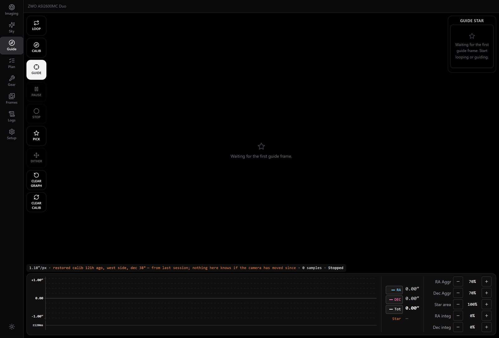

Camera
Exposure, gain, offset, binning and sub-frames. Cooling ramps down gradually instead of shocking the sensor. Live view and live stacking, with colour sensors debayered and stretched so a frame can be judged, not just displayed.
Built on real nights
Cool the camera, polar align, focus, plate solve, guide, and work through a plan of exposures, all from a Windows machine at the telescope. Drive it from a browser, a phone or a tablet on the same network.

5544Every routine shows its working, so you can judge a result instead of just trusting it.
Exposure, gain, offset, binning and sub-frames. Cooling ramps down gradually instead of shocking the sensor. Live view and live stacking, with colour sensors debayered and stretched so a frame can be judged, not just displayed.
A coarse search to bracket focus, then a fine pass, with a hyperbola fitted through the samples. It measures and compensates for backlash. When a run fails, it says so rather than reporting a number it cannot stand behind.
A built-in guider, calibrated and proven at around 1″ RMS, with PHD2 supported as an alternative. Dithering between subs, and a trace with a labelled axis so you can read the size of an error at a glance.
ASTAP runs locally for pointing, for centring on a target to a tolerance, and for annotating a frame with what is in it. It also reports the focal length it measured, so you can tell whether the reducer was fitted.
A three-point rotation routine that shows the correction on the knobs you actually turn: altitude and azimuth, with a direction and a size.
A sequence engine with startup and shutdown actions, meridian flips, and refocus triggered by time, temperature or HFR drift. A flat wizard for the end of the night.
Sky atlas
The atlas combines OpenNGC with a curated Messier and Caldwell set, and filters it by what actually clears your horizon from your site tonight. Each target shows its altitude curve, transit time and distance from the Moon before you commit to a slew.
Focus
The focuser won't sweep until its slack has been measured, and every move finishes in the same direction so the play is taken up the same way each time. A wrong backlash figure doesn't show in the curve, only as soft stars, so it is measured instead of guessed.

Night mode
One switch turns the whole interface deep red: text, charts, highlights and images. Green and blue are held under half at every step, because rod sensitivity falls off past about 620 nm. That is what protects your dark adaptation, not just a red tint.

Supports anything with an ASCOM driver, anything that speaks Alpaca over the network, and ZWO cameras through their native SDK.
Every device kind has a simulator, including a focuser with real mechanical backlash you can set to a specific value. That lets you reproduce a bad night at a desk.
Install the server on the Windows machine at the mount, then connect from anything on the same network.
Installs a Windows service that starts at boot and serves the app on port 5544. Open the address it prints from any browser on your network.
No app needed: any browser on the same network works, and the Windows server also serves the Android
package directly at /AlanAstro.apk.